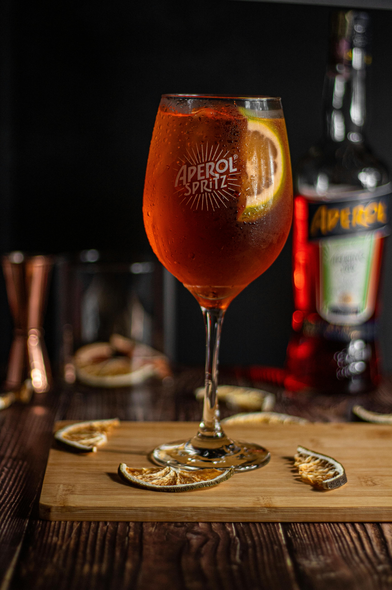
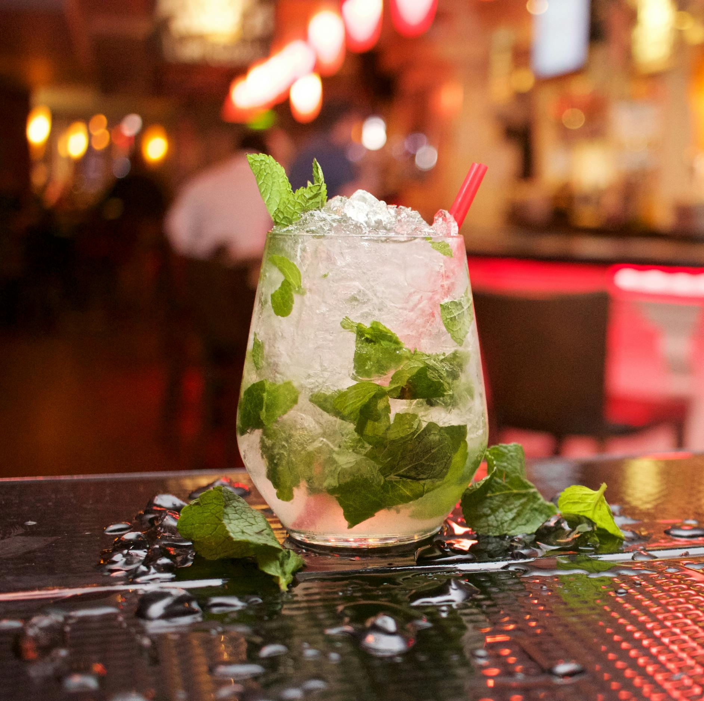
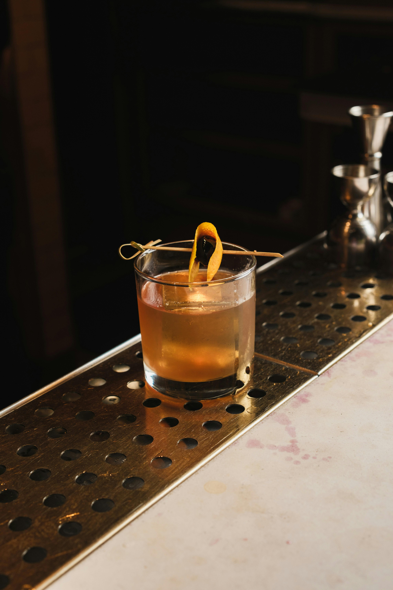
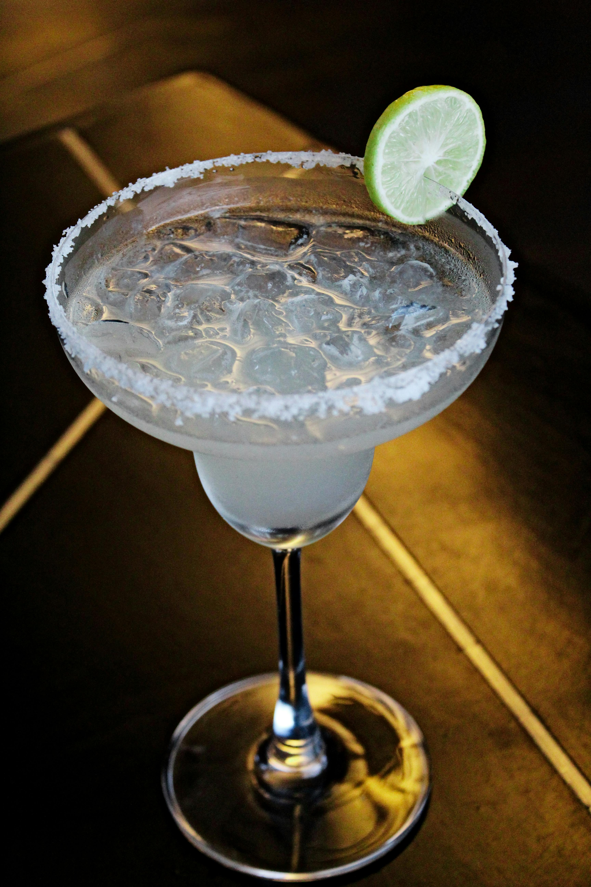
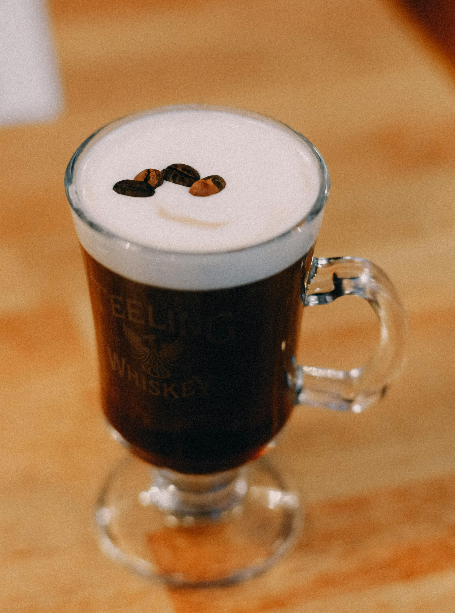
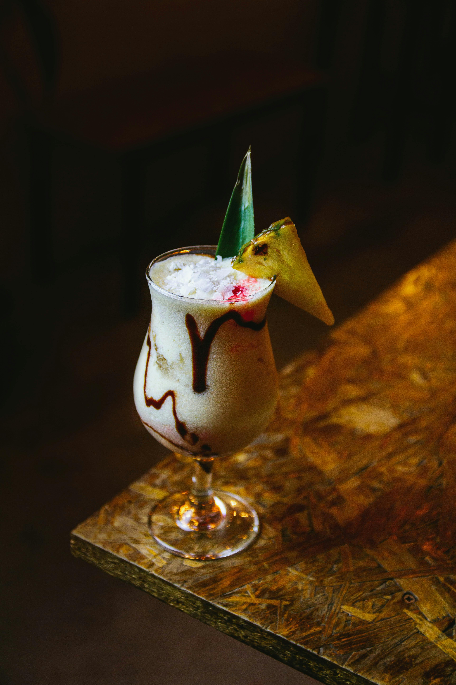

Cocktail Collection
More than drinks, these are stories in a glass. Explore iconic cocktails from around the world and uncover the culture, craft, and flavour behind each one, turning every cocktail into a cultural experience

Aperol Spritz
Aperol Spritz 🇮🇹
Origin:
Italy
History:
The Aperol Spritz originated in Northern Italy and became popular in Venice during the 20th century. It is a modern evolution of the traditional “spritz”, where wine was diluted with water by Austrian soldiers. Today, it represents Italian aperitivo culture — a relaxed pre-dinner social moment.
Ingredients:
- 90 ml Aperol
- 60 ml Prosecco
- 30 ml Soda Water
- Ice
- 1 Orange Slice
Method:
- Fill a large wine glass with ice
- Add 60ml of Prosecco
- Pour 90ml of Aperol
- Top up with 30ml of soda water
- Stir gently
- Garnish with an orange slice
Tip:
Follow the classic 3-2-1 ratio:
- 3 parts Aperol
- 2 parts Prosecco
- 1 part Soda Water

Mojito
Mojito 🇨🇺
Origin:
Cuba
History:
The Mojito dates back to 16th-century Cuba and was originally used for medicinal purposes. It became popular in Havana and is closely associated with Cuban culture and writer Ernest Hemingway. Its fresh combination of mint, lime, and rum reflects the tropical Caribbean climate.
Ingredients:
- 50 ml White Rum
- 25 ml Lime Juice
- 15 ml Simple Syrup
- Mint Leaves
- Soda Water
Method:
- Place the mint leaves in a glass
- Gently muddle to release the mint aroma
- Add 25 ml of simple syrup
- Add 15 ml of simple syrup
- Fill the glass with ice
- Pour in 50 ml of white rum
- Top up with soda water
- Stir gently to combine
- Garnish with mint leaves and a lime wedge
Tip:
For a smoother and more balanced Mojito, always use simple syrup instead of sugar - it mixes instantly and avoids grainy texture in the drink

Old Fashioned
Old Fashioned 🇺🇸
Origin:
United States
History:
The Old Fashioned is one of the oldest known cocktails, dating back to the early 1800s. It was originally simply called a “whiskey cocktail”. The name “Old Fashioned” came from people requesting the drink made the traditional way, without modern additions.
Ingredients:
- 50 ml Bourbon or Rye Whiskey
- 10 ml Simple Syrup
- 2-3 dashes Angostura Bitters
- Ice (preferably a large cube)
- Orange Peel
Method:
- Add 10 ml of simple syrup into a glass
- Add 2-3 dashes of Angostura bitters
- Pour in 50 ml of bourbon or whiskey
- Add a large ice cube
- Stir gently for about 20-30seconds
- Express the oils from an orange peel over the drink
- Garnish with the orange peel
Tip:
Use a large ice cube, it melts slower, keeping your drink cold without watering it down too quickly, preserving the full flavor

Margarita
Margarita 🇲🇽
Origin:
Mexico
History:
The Margarita is believed to have been created in Mexico in the 1930s or 1940s. There are many stories about its origin, often involving bartenders creating the drink for a woman named Margarita. It quickly became one of the most famous tequila-based cocktails worldwide.
Ingredients:
- 50 ml Tequila
- 25 ml Orange Liqueur (Triple Sec or Cointreau)
- 25 ml Fresh Lime Juice
- Salt (for the rim)
- Ice
Method:
- Rub a lime wedge around the rim of your glass
- Dip the rim into salt to coat it
- In a shaker, add ice, tequila, orange liqueur, and lime juice
- Shake well for about 15 seconds
- Strain into the prepared glass, with or without ice (your choice)
Tip:
Always use freshly squeezed lime juice, it makes huge difference. Bottled juice kills the balance and freshness of a perfect margarita.

Irish Coffee
Irish Coffee 🇮🇪
Origin:
Ireland
History:
Irish Coffee was created in the 1940s in Ireland by chef Joe Sheridan at Foynes Airport. He prepared the drink to warm up passengers arriving on a cold winter night, combining hot coffee, Irish whiskey, sugar, and cream. The drink quickly became famous and is now a symbol of Irish hospitality and warmth.
Ingredients:
- 40 ml Irish whiskey
- 90 ml Hot Coffee (freshly brewed)
- 10-15 ml Simple Syrup
- Lightly whipped cream
Method:
- Preheat your glass with hot water, then discard it
- Add the hot coffee and simple syrup, stirring to combine
- Pour in the Irish whiskey and mix gently
- Carefully float the lightly whipped cream on top (use the back of a spoon)
Tips:
- Drink it through the cream - that contrast between hot coffee and cold cream is the whole experience
- Using sugar syrup helps control sweetness and avoids any grainy texture
- You can also swap or mix the whiskey with Baileys for a creamier, sweeter version

Pinã Colada
Pinã Colada 🇵🇷
Origin:
Puerto Rico
History:
The Piña Colada was officially created in Puerto Rico in 1954 and is now the island's national drink. Its tropical blend of pineapple, coconut, and rum represents Caribbean beach culture and relaxation.
Ingredients:
- 50 ml White Rum
- 30 ml Coconut Cream
- 50 ml Pineapple Juice
- Pineapple Slice or Cherries (Optional)
- Ice
Method:
- Add the rum, coconut cream, pineapple juice, and ice into a blender
- Blend until smooth and creamy
- Pour into a chilled glass
- Garnish with a pineapple slice or cherry (optional)
Tip:
Blend until it's smooth but still thick, too much ice will water it down